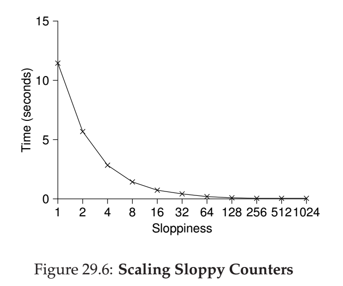

本章主要介绍了如何以锁为基础，将常见的数据结构改造为线程安全的。
一种通用的解决方法
性能：缩放（scaling）问题
并发计数器
并发链表
并发队列
并发哈希表
最后强调了几点经验教训：
在控制流变化的时候不要忘记释放锁（见并发链表的错误实现）
提高并发性不等于提升性能（见交替上锁的链表）
在编写多线程应用时，正确性比效率更重要，需要避免过早优化（premature optimization）
很容易想到，使常见的数据结构线程安全的最简单的方法，就是在对该数据结构执行任何操作之前都上锁，执行完之后再释放锁。
以计数器为例。一个普通的计数器的实现如下：
1 2 3 4 5 6 7 8 9 10 11 12 13 14 15 16 17 18 19 typedef struct __counter_t { int value; } counter_t ; void init (counter_t *c) c->value = 0 ; } void increment (counter_t *c) c->value++; } void decrement (counter_t *c) c->value--; } int get (counter_t *c) return c->value; }
直接在计数器上加入一个操作锁，此时程序如下：
1 2 3 4 5 6 7 8 9 10 11 12 13 14 15 16 17 18 19 20 21 22 23 24 25 26 27 28 typedef struct __counter_t { int value; pthread_mutex_t lock; } counter_t ; void init (counter_t *c) c->value = 0 ; Pthread_mutex_init(&c->lock, NULL ); } void increment (counter_t *c) Pthread_mutex_lock(&c->lock); c->value++; Pthread_mutex_unlock(&c->lock); } void decrement (counter_t *c) Pthread_mutex_lock(&c->lock); c->value--; Pthread_mutex_unlock(&c->lock); } int get (counter_t *c) Pthread_mutex_lock(&c->lock); int rc = c->value; Pthread_mutex_unlock(&c->lock); return rc; }
这样的实现方法显然是简单且正确的。
上述简单粗暴的实现显然会降低并发性，因为有些操作完全是可以并行执行的（如多个get操作）。对于这一问题，给出一形式化的定义如下：
完全缩放 （perfect scaling）：对于一个线程安全的数据结构，如果需要访问它的线程数量小于系统中处理器的数量，且满足多个线程并发访问该数据结构的运行时间不多于只有单个线程访问该数据结构时的运行时间，则称该数据结构是完全缩放的。
实验结果表明，上述实现方法完全做不到完全缩放，多线程并发访问的时间随线程数量而线性增加（在线程数<CPU数的前提下）。这是符合逻辑的。
我个人认为精确的计数器实现是很难（或者说不可能？）做到完全缩放的，因为这些操作本身已经足够简单，很难再有并行优化的余地。书中给出了一种不精确的计数器的实现，称为“sloppy counter”。
这一计数器的基本思想如下：
每个CPU拥有一个本地计数器，除此之外，有一个全局计数器；每个计数器各有一个锁
当某个CPU上运行的线程需要执行increment操作时，获得本地计数器的锁，执行操作，并释放锁
当某个本地计数器的值达到阈值S时，则获得该计数器和全局计数器的锁，全局计数器+=本地计数器，本地计数器清零；释放锁
全局计数器中存放的是计数器的一个估计值，读取时需要先获得全局计数器的锁。可以通过获得全部锁来获得计数器当前的真实值，但这一操作显然是非缩放的
下面是一个S=5，4个线程的执行示例：
可以看出，S的值越小，该实现方法越类似于直接加锁的实现（当S=1时基本退化为直接加锁的实现）；S的值越大，该方法的缩放性越强，性能越好，但全局计数器的值就会偏离真实值更远。

下面给出一种简单的代码实现：
1 2 3 4 5 6 7 8 9 10 11 12 13 14 15 16 17 18 19 20 21 22 23 24 25 26 27 28 29 30 31 32 33 34 35 36 37 38 39 40 41 42 43 44 typedef struct __counter_t { int global; pthread_mutex_t glock; int local[NUMCPUS]; pthread_mutex_t llock[NUMCPUS]; int threshold; } counter_t ; void init (counter_t *c, int threshold) c->threshold = threshold; c->global = 0 ; pthread_mutex_init(&c->glock, NULL ); int i; for (i = 0 ; i < NUMCPUS; i++) { c->local[i] = 0 ; pthread_mutex_init(&c->llock[i], NULL ); } } void update (counter_t *c, int threadID, int amt) int cpu = threadID % NUMCPUS; pthread_mutex_lock(&c->llock[cpu]); c->local[cpu] += amt; if (c->local[cpu] >= c->threshold) { pthread_mutex_lock(&c->glock); c->global += c->local[cpu]; pthread_mutex_unlock(&c->glock); c->local[cpu] = 0 ; } pthread_mutex_unlock(&c->llock[cpu]); } int get (counter_t *c) pthread_mutex_lock(&c->glock); int val = c->global; pthread_mutex_unlock(&c->glock); return val; }
书中给出了一种错误的实现，在此不再摘录了。该错误的问题在于，如果获得锁之后未能成功进行相应操作，则直接返回，忘记释放锁了。我们可以从中得出如下教训：
不要扩大锁覆盖的范围，只覆盖关键区就可以了
安排好代码的执行顺序，对于有多个出口点的代码，最好将出口点汇总在一起，这样不容易忘记释放锁；在具体实现的时候，可以记录返回值，并配合goto语句
下面是正确的实现：
1 2 3 4 5 6 7 8 9 10 11 12 13 14 15 16 17 18 19 20 21 22 23 24 25 26 27 28 29 30 31 32 33 34 35 36 37 void List_Init (list_t *L) L->head = NULL ; pthread_mutex_init(&L->lock, NULL ); } void List_Insert (list_t *L, int key) node_t *new = malloc (sizeof (node_t )); if (new == NULL ) { perror("malloc" ); return ; } new ->key = key; pthread_mutex_lock(&L->lock); new ->next = L->head; L->head = new ; pthread_mutex_unlock(&L->lock); } int List_Lookup (list_t *L, int key) int rv = -1 ; pthread_mutex_lock(&L->lock); node_t *curr = L->head; while (curr) { if (curr->key == key) { rv = 0 ; break ; } curr = curr->next; } pthread_mutex_unlock(&L->lock); return rv; }
显然上述实现并不具有完全缩放性。另一种想法是采用交替上锁（hand-over-hand locking）技术：为每个结点都初始化一个锁，需要访问结点时，则获取该结点对应的锁。这个想法虽然听起来很好，极大地增加了并发性，但在实际操作中效率很低，因为请求/释放锁的操作耗时太多。如果采取一种混合策略（如每n \sqrt{n} n
书中给出了一种比较巧妙的实现。一般来说，入队操作只会访问队头，出队操作只会访问队尾，因此可以对这两种操作分别建立一个锁，一个队头锁，一个队尾锁；在进行操作时分别上锁。
代码中的细节是，为了将两种操作分离开，在队列的头部增加了一个伪结点；所以出队的时候返回的是队头的下一个结点的值；然后删除队头，它原来的下一个结点成为队头，也成为伪结点。
1 2 3 4 5 6 7 8 9 10 11 12 13 14 15 16 17 18 19 20 21 22 23 24 25 26 27 28 29 30 31 32 33 34 35 36 37 38 39 40 41 42 43 44 45 46 typedef struct __node_t { int value; struct __node_t *next ; } node_t ; typedef struct __queue_t { node_t *head; node_t *tail; pthread_mutex_t headLock; pthread_mutex_t tailLock; } queue_t ; void Queue_Init (queue_t *q) node_t *tmp = malloc (sizeof (node_t )); tmp->next = NULL ; q->head = q->tail = tmp; pthread_mutex_init(&q->headLock, NULL ); pthread_mutex_init(&q->tailLock, NULL ); } void Queue_Enqueue (queue_t *q, int value) node_t *tmp = malloc (sizeof (node_t )); assert(tmp != NULL ); tmp->value = value; tmp->next = NULL ; pthread_mutex_lock(&q->tailLock); q->tail->next = tmp; q->tail = tmp; pthread_mutex_unlock(&q->tailLock); } int Queue_Dequeue (queue_t *q, int *value) pthread_mutex_lock(&q->headLock); node_t *tmp = q->head; node_t *newHead = tmp->next; if (newHead == NULL ) { pthread_mutex_unlock(&q->headLock); return -1 ; } *value = newHead->value; q->head = newHead; pthread_mutex_unlock(&q->headLock); free (tmp); return 0 ; }
并发哈希表的实现借用了上述并发链表的实现，这一实现是比较简化的。由于不同的槽对应的链表的操作是可以并行的（相当于每个槽对应一个锁），因此这一实现的并发性是比较高的。
1 2 3 4 5 6 7 8 9 10 11 12 13 14 15 16 17 18 19 20 21 22 #define BUCKETS (101) typedef struct __hash_t { list_t lists[BUCKETS]; } hash_t ; void Hash_Init (hash_t *H) int i; for (i = 0 ; i < BUCKETS; i++) { List_Init(&H->lists[i]); } } int Hash_Insert (hash_t *H, int key) int bucket = key % BUCKETS; return List_Insert(&H->lists[bucket], key); } int Hash_Lookup (hash_t *H, int key) int bucket = key % BUCKETS; return List_Lookup(&H->lists[bucket], key); }
没写。